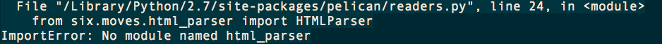

在把博客的本地环境在 MBP 重新部署的时候遇到的.
现象描述:
pelican 发布博文时出现如下错误
ImportError: No module named html_parser 
- 发现是 mac python 自带的 six module 库有问题.因为原生six 的 version 是1.4的,最新的已经到1.8了.
import six
print six.__version__
- Solution:
- 从 https://pypi.python.org/pypi/six/ 下载最新的 source.
- 解压后执行
sudo python setup.py install
Comments !